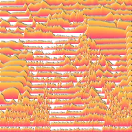

کنٹور اسٹرپس

اسٹیک شدہ کاغذی اسٹرپس بناتا ہے جن کی اونچائی لیئر کی چمک یا اوپیسٹی کے مطابق ہوتی ہے، جیسے پہاڑی سلسلے کا منظر۔
سیٹنگز
| سیٹنگ | قسم | رینج | ڈیفالٹ |
|---|---|---|---|
| تعداد | نمبر | 0.5 سے 200 تک | 10 |
| اونچائی | نمبر | 0 سے 15 تک | 1 |
| زاویہ | زاویہ | -3600° سے 3600° تک | 0° |
| موٹائی | نمبر | 0 سے 1 تک | 0.005 |
| فیز | نمبر | -1000 سے 1000 تک | 0 |
| انورٹ | آن یا آف | – | آف |
| کنارے کا رنگ | رنگ | – | #223355 |
| رنگ 1 | رنگ | – | #FF9933 |
| رنگ 2 | رنگ | – | #AA3399 |
| روشنی کا رنگ | رنگ | – | #FFFFFF |
| روشنی کا زاویہ | زاویہ | 0° سے 3600° تک | 0° |
| ہائٹ میپ | انتخاب | الفا, لومینینس | لومینینس |
| لیئر پر ماسک | آن یا آف | – | آن |